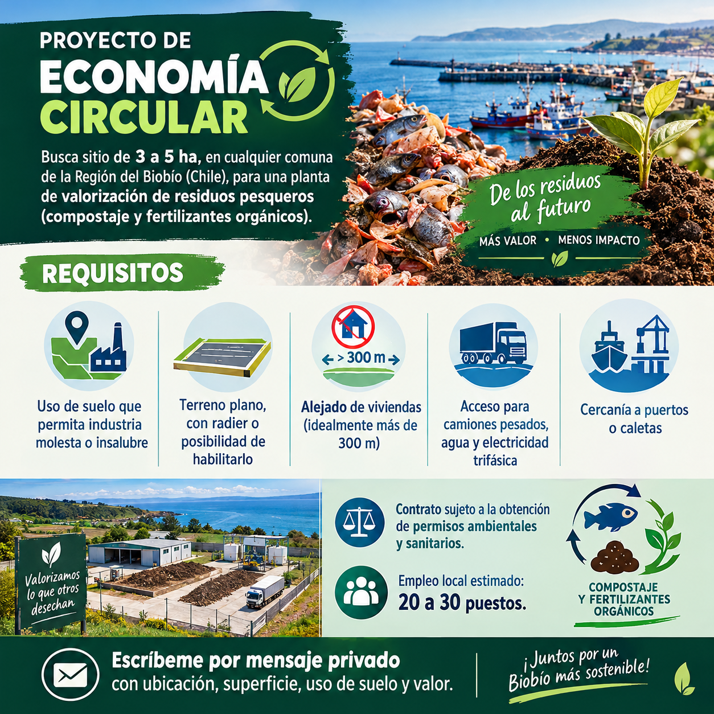

Diseñamos una planta que convierte el descarte de jibia en compost y fertilizantes orgánicos usando biotecnología, y que deja empleo y capacidades en la región.
La jibia deja descartes ricos en proteína y nitrógeno, justo lo que necesitan los suelos agrícolas. Sin tratamiento, ese mismo material genera olores, líquidos contaminantes y riesgo sanitario.
La economía circular propone cambiar la pregunta: en vez de dónde botarlo, qué producto útil podemos hacer con él, y cerca de dónde se necesita.

Son microorganismos y enzimas que hacen el trabajo de descomponer y transformar. Estas son las rutas que evaluamos; la planta puede combinar varias.
Microorganismos aeróbicos degradan el residuo mezclado con material vegetal. Resulta un abono estable, sin olor fuerte ni patógenos si se maneja bien la temperatura.
Enzimas rompen las proteínas en fragmentos pequeños. Sirven como fertilizante líquido y bioestimulante para cultivos.
Bacterias o ácidos estabilizan el residuo fresco y permiten almacenarlo antes de procesarlo, útil cuando las entregas llegan en bloques.
La digestión anaerobia produce gas que puede alimentar la propia planta y deja un lodo aprovechable como abono.
Las partes duras de los cefalópodos contienen quitina, base de materiales con usos agrícolas e industriales. Está por evaluar en una etapa posterior.
Lombrices terminan el proceso y mejoran la calidad del producto final. Es una opción de bajo costo para escalas pequeñas.
El descarte llega en bateas tipo tolva y se estabiliza para controlar olores y patógenos desde el primer momento. Evaluamos el uso de cal viva y su costo por tonelada.
Según el estado del residuo, se elige compostaje, hidrólisis u otra ruta. Se mide temperatura, humedad y nitrógeno en cada lote.
Se analiza el material final y se formula el compost o fertilizante para el cultivo que lo va a usar.
Si aún no hay autorización para la escala completa, se parte con un piloto acotado y se amplía a medida que se obtienen los permisos ambientales y sanitarios.
El valor del proyecto queda en el territorio. Los residuos se transforman cerca de donde se generan, el producto vuelve a los suelos de la región y los puestos de trabajo son locales.
Además, la planta es un caso de estudio real para la formación técnica y profesional: estudiantes de INACAP sede Los Ángeles trabajan el diseño como desafío académico.
El modelo está pensado para replicarse. Cada provincia tiene una producción agrícola distinta, así que el mismo residuo puede convertirse en productos distintos según la demanda local.
Zona agrícola y forestal, con demanda de abonos para cultivos y recuperación de suelos. Primer foco por la presencia de la sede Los Ángeles.
Más cercana a los puertos y caletas, con salida logística hacia el resto del país.
Territorio costero con actividad pesquera y oportunidades de abastecer a su agricultura y silvicultura.
Si tu empresa, organización o tú pueden aportar con alguno de estos recursos, conversemos.
Ubicación, superficie, uso de suelo y valor son los datos que necesitamos para evaluar un terreno. El contrato queda sujeto a la obtención de los permisos ambientales y sanitarios.